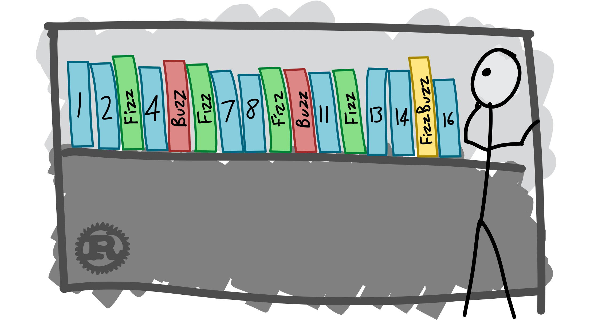

Bài toán FizzBuzz
FizzBuzz vốn là bài toán vui ở Anh để dạy cho cho trẻ con làm quen với phép chia. Sau đó, nó được thay đổi đôi chút để có thể làm 1 bài test đầu vào trong phỏng vấn các lập trình viên. Bạn có thể đọc thêm vài thứ liên quan tới bài toán FizzBizz tại blog VinaCode. Giờ đây, FizzBuzz có lẽ trở nên nổi tiếng hơn, và chắc kể cả các lập trình viên không biết code cũng biết đi tìm lời giải cho bài toán này.
Đề bài: Viết một chương trình để in ra các số từ 1 đến 100. Nhưng đối với các số là bội của 3 thì in ra chữ “Fizz” thay vì hiển thị số đó và đối với các số là bội của 5 thì in ra chữ “Buzz”. Đối với các số vừa là bội của 3 và 5 thì in ra chữ “FizzBuzz”.

Minh hoạ bài toán FizzBuzz (nguồn ảnh: chrismorgan.info)
Khá dễ phải không nào? Thực lòng tôi chưa gặp 1 ai và cũng không nghĩ rằng có ai tự nhận là lập trình viên mà không giải quyết được bài toán này.
FizzBuzz với các thuật toán Machine Learning
Lời giải cho bài toán FizzBuzz được thảo luận rất nhiều ở trên mạng, thậm chí có cả ở các diễn đàn của Việt Nam. Các lời giải thì muôn hình muôn dạng, có lời giải đơn giản, có lời giải lại hướng tới sự tối giản (và đi kèm là khó đọc), hoặc như có người có thể bê tới hàng chục dòng code để giải quyết. Tuy nhiên, không biết đã bao giờ bạn từng nghĩ, liệu có thể dạy cho máy tính trả lời bài toán này hay chưa? Liệu có thuật toán Machine Learning nào có thể giải quyết bài toán này hay không?
Được chứ. Tuy nhiên, ở đây có các hướng làm chính như sau:
-
Tạo ra các Features mới, thể hiện đặc tính chia hết cho 3 và chia hết cho 5. Bằng cách thêm vào các Features này, hầu hết các thuật toán Classify như Logistics Regression, Decision Tree,… đều có thể giải quyết bài toán một cách đơn giản, gọn gàng với độ chính xác tuyệt đối.
-
Không tạo ra các Features mang tính trực tiếp như vậy. Khi đó, mô hình của chúng ta phải học được cách để diễn tả tính chia hết cho 3, chia hết cho 5 (và chia hết cho 15, dĩ nhiên) của từng số.
-
Chuyển bài toán sang bài toán khác, cá nhân tôi không thích cách giải quyết này. Bạn có thể xem 1 lời giải như vậy ở trang Algorithmia.
Cách thứ nhất tuy rõ ràng, mang lại kết quả cao hơn (làm sao có thể đánh bại 1 kết quả chính xác tuyệt đối?), nhưng lại không mấy thú vị. Nếu làm theo cách này, chúng ta sẽ chẳng học được gì (nhưng bạn có thể qua vòng interview, thật tuyệt!). Về cách thứ 2, Neural Network là 1 lựa chọn tuyệt vời, và trong bài này tôi cũng sẽ giải quyết bài toán FizzBuzz bằng Neural Network, sử dụng TensorFlow.
Giới thiệu TensorFlow
TensorFlow là 1 thư viện về Machine Learning, chuyên về Deep Learning do Google phát triển, được công bố mã nguồn vào tháng 11/2015. Theo thông tin từ Google, TensorFlow được sử dụng trong nhiều dịch vụ và hoạt động của Google. Các bạn có thể xem mã nguồn của TensorFlow ở đây: Github

TensorFlow xử lý các model dưới dạng data flow graph (nguồn ảnh: tensorflow.org)
Dù có sử dụng interface là Python (và C++/Java/Go), nhưng performance của TensorFlow vẫn được đảm bảo do mã nguồn được viết bằng C++. TensorFlow có thể hoạt động tốt trên GPU, các hệ thống song song và phân tán, cũng như các thiết bị nhỏ như smartphone. TensorFlow mới ra phiên bản 1.0 gần đây, với nhiều nâng cấp. Nếu chọn 1 framework để làm việc với Deep Learning, TensorFlow sẽ là 1 lựa chọn không tệ. Hiện tại, TensorFlow đang có nhiều kế hoạch để người dùng có thể sử dụng TensorFlow dễ dàng hơn, ví như việc Keras được tích hợp sẵn trong TensorFlow bản 1.2 mới thông báo gần đây chẳng hạn.
Sử dụng TensorFlow để giải bài toán FizzBuzz
Để thực hiện bài toán, đầu tiên chúng ta sẽ import các package cần thiết: TensorFlow (dĩ nhiên), numpy (để xử lý đầu vào bài toán), time (đo thừoi gian chạy)
import tensorflow as tf
import numpy as np
import time
Tiếp đó, chúng ta viết riêng các biến sẽ sử dụng trong bài để tiện thay đổi, nếu cần
NUM_DIGITS = 13
NUM_LABELS = 4
X_WIDTH = NUM_DIGITS
NUM_NODES = 128
BATCH_SIZE = 128
GRADIENT_CONSTANT = 0.05
Ngoài ra, là các hàm thay đổi input, tính toán độ chính xác của kết quả, print output
def binary_encode(i, num_digits):
return np.array([i >> d & 1 for d in range(num_digits)])[::-1]
def fizz_buzz_encode(i):
if i % 15 == 0: return np.array([0, 0, 0, 1])
elif i % 5 == 0: return np.array([0, 0, 1, 0])
elif i % 3 == 0: return np.array([0, 1, 0, 0])
else: return np.array([1, 0, 0, 0])
def accuracy(predictions, labels):
return (100.0 * np.sum(np.argmax(predictions, 1) == np.argmax(labels, 1))
/ predictions.shape[0])
def fizz_buzz(i, prediction):
return [str(i), "fizz", "buzz", "fizzbuzz"][prediction]
Và chúng ta cũng sẽ tạo nên tập train và tập test. Tập test, dĩ nhiên sẽ là các số từ 1 tới 100. Ngoài ra, labels kết quả sẽ thay đổi sang dạng one-hot column vector, đây là dạng labels thường gặp khi giải quyết các bài toán phân loại sử dụng Deep Learning, bởi lẽ nó rất phù hợp để sử dụng hàm Cross-entropy để đánh giá. Chúng ta sẽ sử dụng input là các chữ số của số khi đã được mã hoá nhị phân, điều này giúp cho chúng ta có đủ input đầu vào. Bạn có thể xem vài cách xử lý input khác trong phần sau.
trX = np.array([binary_encode(i, NUM_DIGITS) for i in range(101, 2 ** NUM_DIGITS)])
trY = np.array([fizz_buzz_encode(i) for i in range(101, 2 ** NUM_DIGITS)])
trX = trX.astype(np.float32)
trY = trY.astype(np.float32)
teX = np.array([binary_encode(i, NUM_DIGITS) for i in range(1, 101)])
trY = np.array([fizz_buzz_encode(i) for i in range(1, 101)])
teX = teX.astype(np.float32)
teY = teY.astype(np.float32)
Sau khi đã khai báo input, các biến cố định sử dụng trong toàn chương trình, ta lại tiếp tục phải khai báo mô hình của chúng ta cho TensorFlow, thật lăng nhằng và mệt mỏi phải không nào? Ở đây, chúng ta sử dụng mô hình Neural Network với 1 hidden layer. Hàm loss là hàm Cross-entropy. Sử dụng Gradient Decent là phương pháp optimize (thực ra là Stochatic Gradient Decent - SGD). RELU được chọn làm hàm activation.
graph = tf.Graph()
with graph.as_default():
tf_train_dataset = tf.placeholder(tf.float32, shape=(BATCH_SIZE, X_WIDTH))
tf_train_labels = tf.placeholder(tf.float32, shape=(BATCH_SIZE, NUM_LABELS))
tf_test_dataset = tf.constant(teX)
weights_1 = tf.Variable(
tf.truncated_normal([X_WIDTH, NUM_NODES]))
biases_1 = tf.Variable(tf.zeros([NUM_NODES]))
tf_hidden_nodes = tf.nn.relu(tf.matmul(tf_train_dataset, weights_1) + biases_1)
weights_2 = tf.Variable(
tf.truncated_normal([NUM_NODES, NUM_LABELS]))
biases_2 = tf.Variable(tf.zeros([NUM_LABELS]))
logits = tf.matmul(tf_hidden_nodes, weights_2) + biases_2
loss = tf.reduce_mean(
tf.nn.softmax_cross_entropy_with_logits(labels=tf_train_labels, logits=logits))
optimizer = tf.train.GradientDescentOptimizer(GRADIENT_CONSTANT).minimize(loss)
train_prediction = tf.nn.softmax(logits)
test_prediction = tf.nn.softmax(tf.matmul(
tf.nn.relu(tf.matmul(tf_test_dataset, weights_1) + biases_1), weights_2) + biases_2)
Do đặc trưng của Neural Network là tính ngẫu nhiên khi khởi tạo các weight và bias ban đầu, từ đó mỗi lần chạy sẽ ra các kết quả khác nhau đôi chút, do đó chúng ta có thể viết thêm vài dòng cho việc lưu lại model.
tf.add_to_collection('params', weights_1)
tf.add_to_collection('params', biases_1)
tf.add_to_collection('params', weights_2)
tf.add_to_collection('params', biases_2)
saver = tf.train.Saver()
Ok, tới đây thì đã khai báo xong. Chúng ta có thể chạy mô hình được rồi. Sử dụng SGD, chúng ta có thể train mô hình với số lượng vòng lặp rất lớn, ở đây tôi chọn NUM_STEPS = 120000 lần. Ngoài ra, mỗi 10000 bước, chúng ta lại in kết quả ra ngoài để tiện theo dõi, đồng thời lưu mô hình lại.
with tf.Session(graph=graph) as session:
start_time = time.time()
tf.global_variables_initializer().run()
print('Initialized')
for step in range(NUM_STEPS):
offset = np.random.randint(0, len(trX) - 1, BATCH_SIZE)
batch_data = trX[offset]
batch_labels = trY[offset]
feed_dict = {tf_train_dataset: batch_data, tf_train_labels: batch_labels}
_, l, predictions = session.run([optimizer, loss, train_prediction], feed_dict = feed_dict)
if (step % 10000 == 0):
print("Minibatch loss at step %d: %f" % (step, l))
print("Minibatch accuracy: %.1f%%" % accuracy(predictions, batch_labels))
saver.save(session, 'my-model', global_step=step)
print('Test accuracy: %.1f%%' % accuracy(test_prediction.eval(), test_labels))
print("--- %s seconds ---" % (time.time() - start_time))
Và đây là kết quả, thật tuyệt!
Initialized
Minibatch loss at step 0: 11.771742
Minibatch accuracy: 25.8%
Minibatch loss at step 10000: 0.808692
Minibatch accuracy: 69.5%
Minibatch loss at step 20000: 0.458894
Minibatch accuracy: 84.4%
Minibatch loss at step 30000: 0.253919
Minibatch accuracy: 90.6%
Minibatch loss at step 40000: 0.248654
Minibatch accuracy: 89.1%
Minibatch loss at step 50000: 0.077893
Minibatch accuracy: 98.4%
Minibatch loss at step 60000: 0.038626
Minibatch accuracy: 99.2%
Minibatch loss at step 70000: 0.043113
Minibatch accuracy: 99.2%
Minibatch loss at step 80000: 0.036851
Minibatch accuracy: 100.0%
Minibatch loss at step 90000: 0.028547
Minibatch accuracy: 100.0%
Minibatch loss at step 100000: 0.030439
Minibatch accuracy: 100.0%
Minibatch loss at step 110000: 0.023854
Minibatch accuracy: 100.0%
Minibatch loss at step 120000: 0.016343
Minibatch accuracy: 100.0%
Test accuracy: 100.0%
--- 78.5351741314 seconds ---
Bạn có thể load lại mô hình tại những điểm đã lưu.
with tf.Session(graph=graph) as sess:
new_saver = tf.train.import_meta_graph('my-model-120000.meta')
new_saver.restore(sess, tf.train.latest_checkpoint('./'))
all_vars = tf.get_collection('params')
weights_1, biases_1, weights_2, biases_2 = all_vars[0], all_vars[1], \
all_vars[2], all_vars[3]
tf_test_dataset = tf.constant(teX)
test_prediction = tf.nn.softmax(tf.matmul(
tf.nn.relu(tf.matmul(tf_test_dataset, weights_1) + biases_1), weights_2) + biases_2)
predict_op = tf.argmax(test_prediction, 1)
teY, tf_onehot_output = sess.run([predict_op, test_prediction])
output = np.vectorize(fizz_buzz)(numbers, teY)
Và tới đây, ta có thể in ra kết quả như yêu cầu ban đầu.
In [15]: output
Out[15]:
array(['1', '2', 'fizz', '4', 'buzz', 'fizz', '7', '8', 'fizz', 'buzz',
'11', 'fizz', '13', '14', 'fizzbuzz', '16', '17', 'fizz', '19',
'buzz', 'fizz', '22', '23', 'fizz', 'buzz', '26', 'fizz', '28',
'29', 'fizzbuzz', '31', '32', 'fizz', '34', 'buzz', 'fizz', '37',
'38', 'fizz', 'buzz', '41', 'fizz', '43', '44', 'fizzbuzz', '46',
'47', 'fizz', '49', 'buzz', 'fizz', '52', '53', 'fizz', 'buzz',
'56', 'fizz', '58', '59', 'fizzbuzz', '61', '62', 'fizz', '64',
'buzz', 'fizz', '67', '68', 'fizz', 'buzz', '71', 'fizz', '73',
'74', 'fizzbuzz', '76', '77', 'fizz', '79', 'buzz', 'fizz', '82',
'83', 'fizz', 'buzz', '86', 'fizz', '88', '89', 'fizzbuzz', '91',
'92', 'fizz', '94', 'buzz', 'fizz', '97', '98', 'fizz', 'buzz'],
dtype='|S8')
Những phần có thể tìm hiểu thêm
Tới đây đã xong chưa? Chưa, vốn ban đầu tôi định viết 1 bài dài đằng dặc tầm gấp 3 gấp 4 bài này, tuy nhiên vì quá mất công và tới giờ chưa xong nên tôi quyết định sẽ haonf thành bài viết này trước. Các bạn có thể tìm hiểu thêm rất nhiều phần như sau:
-
thay đổi output, 1 - 100 là 1 khoảng khá nhỏ, do đó kết quả có thể không thể hiện được kết quả thuật toán.
-
thử với các trường hợp encode khác, ví dụ như decimal encode (tôi từng thử và kết quả khá tệ), one-hot decimal encode (tôi tin kết quả trường hợp này sẽ tốt), hoặc các hệ cơ số khác.
-
tìm hiểu nếu thay 3 và 5 bằng các số khác, ví như 2 và 7 thì kết quả sẽ thay đổi như thế nào.
-
xem xét các trường hợp, tìm kiếm các thành phần có tỷ lệ còn chưa thật sự tốt, đưa ra nhận xét.
-
tìm hiểu xem việc chia hết cho 3, chia hết cho 5 được thể hiện bằng cách nào trong mô hình.
-
tim hiểu về việc rút ngắn thời gian chạy
-
nết như phát triển thành mô hình có 2 hidden layers thì sao?
Có lẽ còn nhiều nữa, đào sâu thật sâu vấn đề bao giờ cũng nảy sinh vô vàn vấn đề khác nữa mà. Như vậy, bắt đầu bằng 1 bài toán đơn giản, khi thay đổi góc nhìn, ta có thể nhận được nhiều điều thú vị khác, cũng như mở ra nhiều vấn đề để tìm hiểu thêm. Có thể khi có kết quả, tôi sẽ viết thêm vài bài về vấn đề này. Code tôi sử dụng trong bài, các bạn có thể theo dõi đầy đủ ở đây: Github
Note: bài viết của tôi lấy ý tưởng từ bài blog này. Tất nhiên, tôi có thay đổi và sửa chửa ít nhiều, từ mặt ý tưởng cho tới code, do đó kết quả cũng có thay đổi, ví như tỷ lệ chính xác có thể lên tới 100% thay vì chỉ khoảngkhoảng 90% như trong bài chẳng hạn.